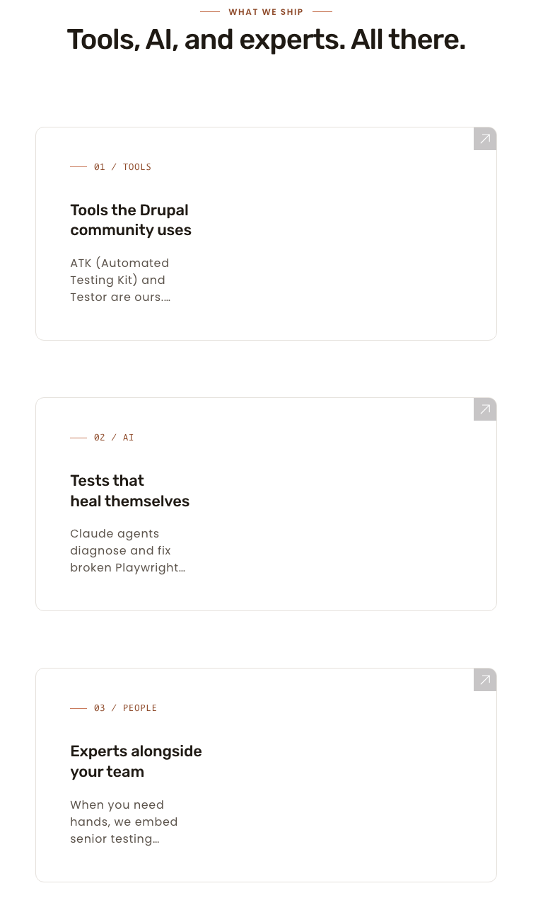
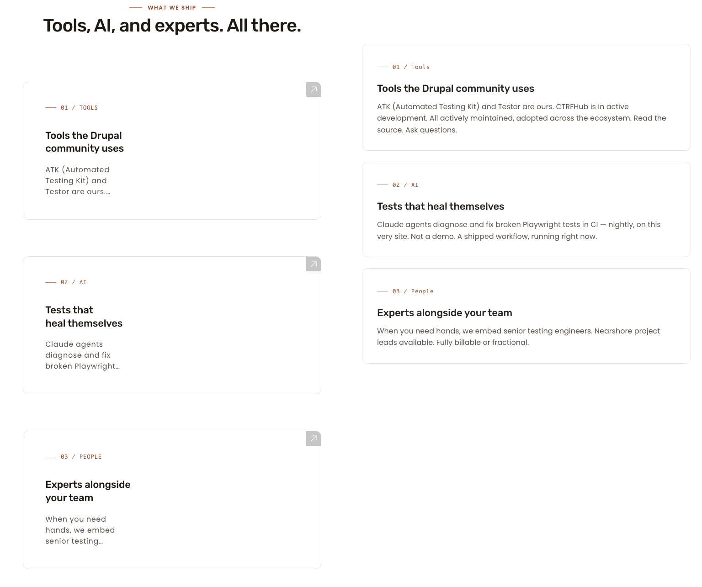
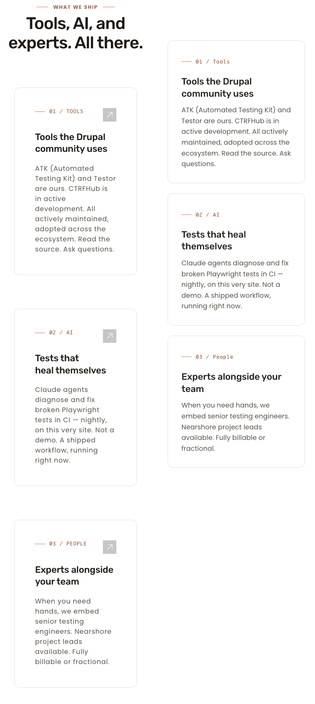
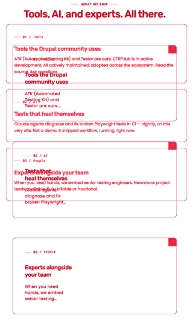

Sub-cycle 8.4 round 2: feature-card grid renders 3 / 1 / 1 at 1280 / 768 / 375, matching preview literally. 8.2 hero fix and 8.4 round-1 desktop fix both preserved. Ready for O to commit + merge.
Crop
Pixels diff
Delta %
feature 1280
75,416
9.50%
feature 768
65,910
6.68%
feature 375
74,415
11.85%
hero 768 (regression)
116,320
15.78%
What I see different (plain English)
In scope (sub-cycle 8.4):
1280 (desktop): Feature-card grid is a single row of 3 cards on both live and preview. Round-1 desktop fix is preserved. MATCH on layout.
768 (tablet): Feature-card grid is a 1-column stack of 3 cards on both live and preview. This is the round-2 fix. Round 1 was 2+1 at 768; round 2 is 1-col, matching preview literally. MATCH on layout.
375 (mobile): Feature-card grid is a 1-column stack on both live and preview. Unchanged from round 1. MATCH on layout.
Hero band at 768: Live hero spans full viewport width with no horizontal overflow; CTAs and copy render cleanly. The 8.2 hero fix (padding-inline: 0 on .hero.theme--white) is preserved. No regression.
Card-chrome differences vs preview (intentional, Phase 4.1):
Live cards have a corner arrow icon in the top-right; preview cards do not.
Live cards include an internal "01 / TOOLS" eyebrow with a slightly different style (uppercased + underline) than the preview's "01 / Tools".
Live has a section-head ("WHAT WE SHIP" eyebrow + H2 "Tools, AI, and experts. All there.") above the card grid; the preview omits this section-head.
Live cards are slightly narrower (305 px at 1280) than preview cards (368 px at 1280) because of the surrounding container's padding.
These chrome / section-head differences account for the bulk of the non-zero pixel delta in the feature-card crops. They are intentional design decisions from earlier phases and are not regressions.
Out of scope (other unrun sub-cycles): Header chrome (CTA, logo treatment), hero whitespace, footer-CTA polish, FAQ icons, footer casing all still show DELTA against the preview because they belong to sub-cycles 8.1, 8.5, 8.6. These are NOT inputs to the round-2 verdict.
3 cards in a single row on both sides. Diff dimensions 1280×620. 75,416 differing pixels (9.50%). Delta concentration: card chrome (corner arrow, internal eyebrow) and section-head text above cards in live.
3 cards stacked 1-col on both sides. Diff dimensions 768×1285. 65,910 differing pixels (6.68%). Delta concentration: section-head text in live, card chrome, accumulated y-shift from card-height differences.
Live← drag the slider to reveal preview →Preview
LivePreview

Pixel diff (red overlay)
Side-by-side composite (live left, preview right)

375 — Feature-card grid (no regression from round 1)
MATCH on layout
3 cards stacked 1-col on both sides. Diff dimensions 375×1674. 74,415 differing pixels (11.85%). Delta concentration: section-head text in live + card chrome + text-wrap differences from narrower live container width.
Live← drag the slider to reveal preview →Preview
LivePreview
Pixel diff (red overlay)
Side-by-side composite (live left, preview right)

Hero band at 768 — 8.2 regression check
No regression
Live hero spans full viewport width; no horizontal overflow; H1 + sub-copy + 2 CTAs render cleanly. Diff dimensions 768×960. 116,320 differing pixels (15.78%). Delta concentration: header-chrome differences (out of scope, 8.1) and slight vertical shift from header height; the hero band itself matches expected behavior.
Live← drag the slider to reveal preview →Preview
LivePreview
Pixel diff (red overlay)
Side-by-side composite (live left, preview right)
Per-section delta table
Section
Viewport
Status
Description (plain English)
Diff thumbnail
Feature-card grid
1280
MATCH on layout
3 cards in a single row on both sides. Round-1 desktop fix preserved. Pixel deltas come from the section-head H2 / "WHAT WE SHIP" eyebrow and card chrome (corner arrow, internal eyebrow) — both intentional from Phase 4.1.
Feature-card grid
768
MATCH on layout
1-col stack of 3 cards on both sides. Round-2 fix in place: was 2+1 in round 1, now 1-col matching preview literally. Pixel deltas come from section-head + card chrome + accumulated y-shift; layout is correct.

Feature-card grid
375
MATCH on layout
1-col stack on both sides. No regression from round 1. Pixel deltas come from section-head + card chrome + text-wrap differences from container width.
Hero band (8.2 regression check)
768
No regression
Hero spans full viewport width on live. padding-inline: 0 on .hero.theme--white still in place. No horizontal overflow at 768. Pixel deltas come from header chrome (out of scope, 8.1) and slight vertical shift, not from the hero band.
Out of scope (other unrun sub-cycles)
These sections still show DELTA against the preview because they are owned by other sub-cycles. They are not inputs to the round-2 8.4 verdict. Listed here for transparency only:
8.1 Header: live has full header chrome (logo, nav, "Call today" CTA); preview has a minimal placeholder header.
NO — whole-page noise dominated by out-of-scope sections (8.1, 8.5, 8.6)
full-768
768×6625
2,280,840
5,088,000
44.83%
NO — same reason
full-375
375×7899
1,346,970
2,962,125
45.47%
NO — same reason
Layout shape was confirmed by Playwright DOM measurement: live cards at 1280 share top=1744 with three distinct left values (3-col); at 768 share left=50 with three distinct top values (1-col stack); at 375 share left=34 with three distinct top values (1-col stack). Preview equivalents: 1280 share top=1020 with three distinct left values; 768 and 375 share left with three distinct top values. Layout shapes match at all three viewports.
How to verify visually
Drag the wipe slider in each per-viewport block. The card layout should be identical on both sides at all three viewports — 3-col at 1280, 1-col stack at 768 and 375.
The visible deltas (chrome, section-head, header) are intentional from earlier phases or belong to other sub-cycles.
If you see a card layout difference (e.g. 2+1 at 768 on either side), that's a real regression and the verdict is wrong.